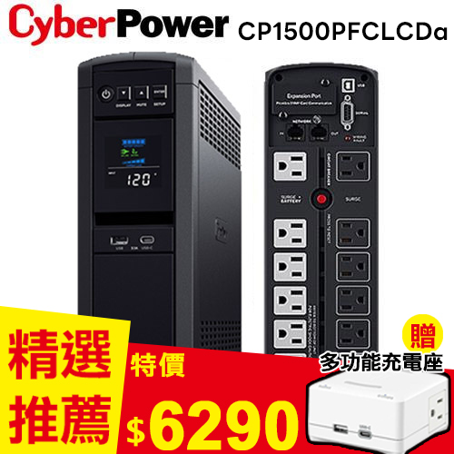
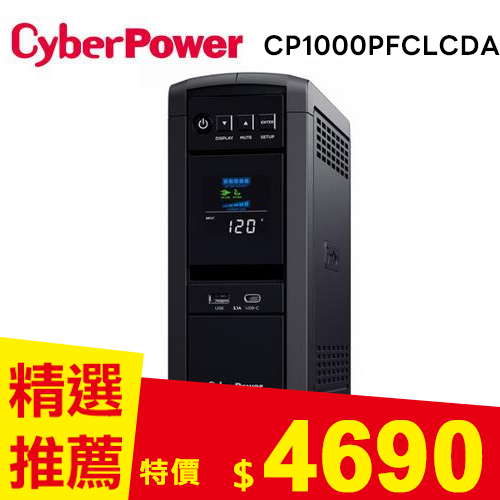
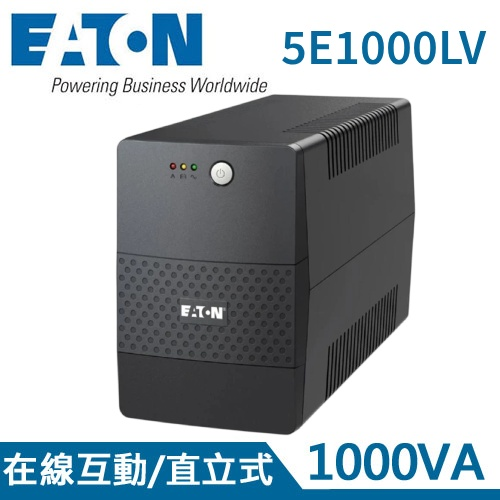
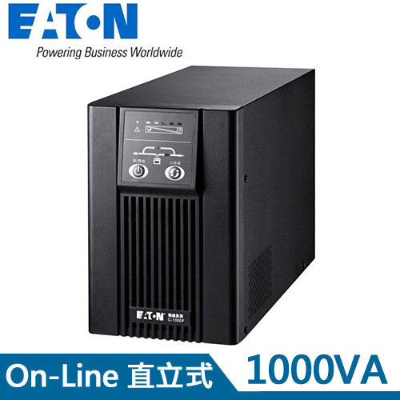

HTML-PPT / BAOYU STYLE · UPS 不斷電系統選購指南
別等跳電才後悔：
一台 UPS 可以救回
你的電腦、NAS
和工作進度嗎？
停電最麻煩的通常不是「黑一下」，而是檔案還沒存、NAS 還在寫入、監控主機突然斷線，或門市結帳設備直接卡住。UPS 不斷電系統就像電力安全氣囊，平常低調，關鍵時刻讓設備有時間安全收尾。

UPS 到底在幫你擋什麼？
很多人以為 UPS 只是在停電時多撐幾分鐘，其實它真正的價值是「讓設備安全過渡」。
市電不是每天都穩穩 110V。遇到瞬間低壓、突波、雷擊感應，或冷氣壓縮機啟動造成的電壓波動，電腦、監控主機、路由器、NAS 都可能被影響。輕則重開機，重則資料損毀、硬碟壞軌、電源供應器提早下課。
UPS 會在電力異常時接手供電。有些機型還具備 AVR 自動穩壓，可以在電壓偏高或偏低時先修正，不一定每次都消耗電池。對家庭、小型辦公室、門市 POS、網路設備來說，UPS 不是讓你繼續用電一整晚，而是給你時間存檔、關機，或讓系統自動安全關閉。
最容易被忽略的是「短暫閃斷」。很多停電不是整區停好幾小時，而是電力瞬間掉一下又回來。人可能只覺得燈閃了一下，但電腦、NAS、路由器和監控主機已經重開。正在上傳的檔案中斷、資料庫寫入失敗、遠端連線斷線，這些都是後面才會慢慢浮現的麻煩。
所以 UPS 的價值不是把家裡變成小型電廠，而是把「突然斷電」變成「可控的收尾時間」。你可以把檔案存好、把主機正常關機、讓 NAS 執行安全關機，或讓網路設備撐到電力恢復。對工作者來說，這幾分鐘可能就是少重做一份報告、少修一次資料庫、少接一通客訴電話。



備援時間怎麼算？可以撐多久？
買 UPS 最常被問：「這台可以撐幾分鐘？」答案不是只看 VA 數字，而是看你接了多少瓦數的設備、UPS 電池容量、轉換效率與電池健康度。負載越高，撐的時間越短；同一台 UPS 接一台路由器可能撐很久，接高階桌機加螢幕就會短很多。
VA 可以把它想成 UPS 的供電能力標示，但真正要拿來判斷能不能帶動設備，還要看 W 數。很多人看到 1000VA 就以為可以接 1000W，這是常見誤會。不同 UPS 的功率因數不同，實際可輸出的瓦數會寫在規格表，例如 1000VA 可能是 600W、800W 或其他數值。選購時要以 W 數確認負載，不要只看 VA。
備援時間（分鐘）約等於：電池可用 Wh × 轉換效率 ÷ 設備總耗電 W × 60。
路由器 15W、光纖數據機 10W、NAS 40W，合計約 65W；若換成桌機 250W 加螢幕 40W，就是 290W，備援時間會明顯縮短。
更直覺的判斷方式是：小功耗網通設備通常追求「停電後還能上網、遠端關機」；桌機與螢幕追求「存檔與正常關機」；NAS、伺服器、監控主機則要搭配 USB 或管理軟體，讓系統偵測到停電後自動關閉。
如果只是保護光纖數據機、Wi-Fi 路由器、小型交換器，總功耗可能只有 30W 到 60W，UPS 的備援時間通常會比接桌機長很多。若是桌機加螢幕，功耗可能從 150W 到 400W 以上都有；如果再加上外接硬碟、擴充座、喇叭、雙螢幕，負載會繼續往上。這也是為什麼同一台 UPS，網通設備可以撐較久，電競桌機卻可能只夠你存檔關機。
比較務實的做法，是先決定你的目標：你是要「撐到電回來」，還是「撐到安全關機」？如果是網路設備，可能希望 30 分鐘以上；如果是桌機工作站，5 到 10 分鐘能完成存檔和關機就很有價值；如果是 NAS 或小型伺服器，重點是能不能通知系統自動關機，而不是人工守在旁邊。
離線式、在線互動式、在線式差在哪？
如果你的電力環境容易忽高忽低，或設備需要較穩的輸出，在線互動式會比單純離線式更安心。若是小型伺服器、關鍵工作站、通訊設備、醫療或工控周邊等比較不能閃一下就重開的場景，則可以評估在線式 UPS。
家用與一般辦公環境，最常見的甜蜜點通常是在線互動式 UPS。它的價格不會像在線式那麼高，又能處理常見的電壓偏高、偏低問題。若你住處或辦公室常有電壓不穩、燈光忽明忽暗、冷氣啟動時設備容易重開，這類機型會比最入門的離線式更有安全感。
在線式 UPS 則適合「不能閃斷」的設備。它的概念是先把輸入電力轉換處理，再輸出給設備，供電品質更穩，但成本、發熱、噪音和耗電也通常更高。簡單說，如果只是家用路由器、一般電腦，未必一開始就要衝在線式；但如果是伺服器、關鍵監控、營業設備或重要工作站，在線式就有它的價值。
哪些人最該裝 UPS？
選購時請先列出會接到 UPS 的設備，估算總瓦數，再保留 20% 到 30% 餘裕。不要把雷射印表機、電暖器、電鍋這種高瞬間功耗設備接到 UPS 電池備援孔，否則很容易過載。UPS 是保護資訊設備，不是拿來撐所有家電。
安裝時也要注意插座配置。很多 UPS 會分成「電池備援＋突波保護」與「只做突波保護」兩種插孔，真正需要停電時繼續運作的設備，才接到電池備援孔。像 NAS、路由器、數據機、桌機主機、螢幕可以視需求接上；印表機、碎紙機、電暖器這類高瞬間功耗設備，通常不建議接在備援孔。
另外，UPS 本身也需要保養。不要把它塞在密閉櫃子、不要長期放在高溫環境、不要讓灰塵堵住散熱孔。電池是消耗品，不是買了就能放十年。若機器開始警示、備援時間明顯變短、電池膨脹或有異味，就要停止使用並安排更換。這些小動作，能讓 UPS 在真正停電時還有可靠表現。
良興推薦：三種 UPS 怎麼選？
如果你是第一次買 UPS，可以用「設備重要性」來分配預算。只想保護網路不斷線，先看入門在線互動式；家裡有 NAS、工作站、雙螢幕或高階桌機，就要把 W 數與純正弦波列入條件；如果是公司關鍵設備，像伺服器、監控主機、門市結帳系統，則要把穩定度、管理功能、維護便利性一起考慮。
這三款推薦商品可以看成三個方向：CyberPower 1500VA 適合想要容量留餘裕、桌機與 NAS 同時保護的使用者；Eaton 5E1000LV 適合一般辦公、網通設備和入門備援；Eaton C1000F 則適合更在意供電品質、希望用在線式架構保護關鍵設備的人。真正選哪台，取決於你要保護的是「方便」還是「不能停」。
FAQ：UPS 常見問題
Q1：UPS 可以撐多久？
要看設備總耗電量與 UPS 電池容量。同一台 UPS 接 60W 網通設備和接 300W 桌機，備援時間會差很多。建議先估算設備瓦數，再用商品規格或原廠備援表確認。
Q2：VA 和 W 差在哪？
VA 是視在功率，W 是實際可供設備使用的功率。選 UPS 時不要只看 VA，還要確認 W 數是否足夠，最好保留 20% 到 30% 餘裕。
Q3：NAS 一定要接 UPS 嗎？
強烈建議。NAS 最怕斷電時還在寫入資料，搭配支援 USB 通訊或自動關機的 UPS，可以大幅降低資料損毀風險。
Q4：純正弦波 UPS 有必要嗎？
如果是主動式 PFC 電源供應器、高階桌機、工作站或比較敏感的設備，純正弦波會更穩定。一般低功耗設備可依預算與需求選擇。
Q5：UPS 電池多久要換？
常見約 2 到 3 年會開始衰退，實際壽命受溫度、放電次數與使用環境影響。若自我測試時間變短、異常警示或電池膨脹，就要盡快更換。
選 UPS 的重點不是買最大台，而是先盤點設備瓦數、確認需要撐多久、決定要不要穩壓或在線式架構。把這三件事想清楚，就比較不會買錯容量，也能把預算花在真正需要保護的設備上。